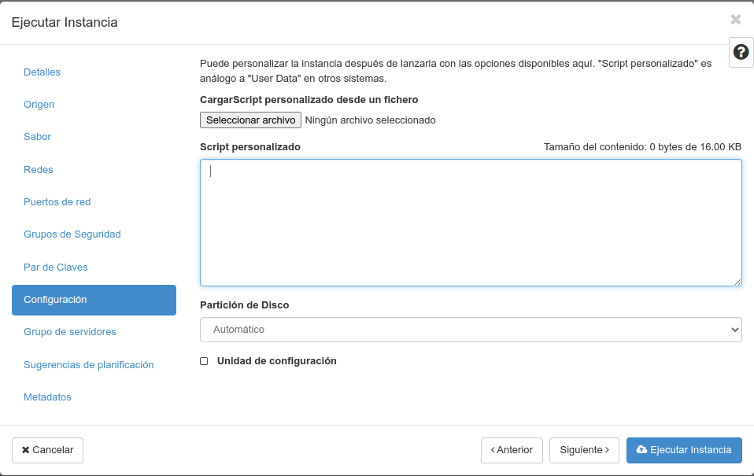

‚òÅÔ∏è OpenStack — ➕ Crear instancias
Imos aprender a lanzar unha ou varias instancias en Openstack, un contorno de nube/cloud empregado en varias empresas e tamén no CESGA.
Se buscas recuperar unha instancia destru√≠da en base a un volume gardado, consulta a secci√≥n ‚òÅÔ∏è OpenStack: Volumes → Como lanzar unha instancia a partir dun volume.
Configuración previa
Acerca de Openstack
Por si tes curiosidade, Openstack ten moitos compoñentes, imos relacionarnos a través do interfaz web con todos eles, para que te fagas unha idea:
- Horizon: O contorno de usuario (GUI). Básicamente o panel de control ou dashboard que manexamos.
- Keystone: Provee autenticación mediante diversos mecanismos (como usuario e contrasinal). Soporta: LDAP, OAuth, OpenID Connect, SAML e SQL
- Nova: Para acceso a recursos de computación. Unha especie de meta-hypervisor que soporta: KVM, LXC (libvirt), QEMU, VMWare, Virtuozzo, zVM e Ironic. Fonte: docs openstack.
- Neutron: Xestiona as diferentes redes.
- Designate: Servizo de DNS.
- Barbicam: Ofrece almacenamento seguro de chaves, credenciais, certificados X509, chaves de cifrado...
- Ceilometer: Para monitorizar os recursos e ver que pasa. Saca métricas e garda o emprego histórico de recursos.
- Cinder: Provee almacenamento en bloques.
- Glance: Almacena e recupera imaxes do disco da máquina virtual. Permite recuperar os datos dende distintas ubicacións.
- Ironic: Permite o aprovisionamento de recursos hardware directamente, máquinas virtuais ou contedores.
- Placement: Acceso API ao inventario e uso de recursos. Axuda a outros servizos a aprovisionar recursos.
- Swift: Permite o almacenamento de obxectos e provee de tolerancia a fallos.
- Octavia: Balanceador de carga.
- AODH: Servizo de alarmas. Provee disparadores e regras.
- Heat: Para orquestación.
- Magnum: Fai posible a orquestación de: Docker Swarm, Kubernetes e Apache Mesos en Openstack. Emprega heat para orquestar o Sistema Operativo.
- Manilla: Provee de acceso coordinado ou compartido a sistemas de arquivos compartidos ou distribuidos.
- Trove: Provee de bases de datos como servizo (relacionais e non relacionais).
- Zaqar: Servizo de mensaxería.
- Mistral: Servizo de workflow/fluxo de traballo. Permite ordear e executar pasos. Xestiona o estado, a orde correta de execución, paralelismo, sincronización e alta dispoñibilidade.
- Zun: Servizo de contendores a través de API.
Podes atopar máis información básica no artigo de redhat de información básica acerca de Openstack e se queres facer unha instalación de Openstack, tamén podes consultar este outro artigo en inglés de Daniel Persson.
Partes do panel web Horizon
Antes de comezar lembra que debes estar conectado á VPN en caso necesario. No caso do CESGA, este panel de control está en: https://cloud.srv.cesga.es noutros casos de empresas que venden o servizo, debes crear o usuario de OpenStack antes de comezar.
Inicia sesión no panel de control.
Se estás no contorno do CESGA lembra empregar o dominio hpc e autenticar mediante KeyStone Credentials.
ANtes de lanzar unha instancia é unha boa práctica e aforrarás traballo se creas antes un par de chaves e defines correctamente un grupo de seguridade.
Creación do par de chaves
Imos conectar sen contrasinal, cun par de claves pública/privada. Podes ler máis informaci√≥n acerca delas en: üîë SSH e túneles. Esta forma de conectar √© o modo recomendado. Non se recomenda empregar contrasinais para conectar a servidores.
Temos dúas formas de crear este par de chaves. O habitual sería telas xa creadas e empregar o comando ssh-keygen dende GNU/Linux ou dende PowerShell en Microsoft Windows. Este comando encárgase xa de crear os arquivos de chave pública e privada cos permisos adecuados. Despois de creadas, poderíamos subir a chave pública (arquivo que rematará en .pub) que estaría dentro do directorio .ssh do noso directorio de usuario.
Sen embargo, desta vez, imos facer que nos autoxenere unha clave SSH o propio panel web. Unha vez iniciemos sesi√≥n imos á: Computaci√≥n → Pares de claves.
Nesta páxina podemos ver a lista de chaves (a parte pública) que podemos asociar na creaci√≥n de instancias. As chaves que asociemos serán as que se po√±an ao final do arquivo üìÑ $HOME/.ssh/authorized_keys para que poidamos conectar coas instancias que creemos.
Se queremos crear un par novo, prememos no botón "Crear Par de Claves" e seleccionamos en "Tipo de clave" a opción "Clave SSH" e en Nombre de Par de Claves un nome calquera que nos sirva para identificar a clave.
Esto debería baixarnos un arquivo co nome que lle teñamos dado rematado en .pem. Debemos gardalo, xa que contén a chave privada e non se poderá volver a baixar. O que se envía ao servidor é a parte pública da chave.
Podemos ter tantos pares de chaves como queiramos. É recomendable empregar ou ben un xestor de chaves como KeepassXC conectado a un axente e sincronizar as chaves entre os equipos que traballemos ou ben xerar unha chave por equipo.
Creación do grupo de seguridade
Cando lanzamos unha instancia, esta debe ter un firewall. O grupo de seguridade é o equivalente na nube a este firewall.
Un grupo de seguridade ten un conxunto de regras de filtrado por protocolo, IP de orixe/destino e porto/s. Cada grupo de seguridade pode ter as súas propias regras.
Unha instancia ten alomenos un grupo de seguridade.
Imaxinemos un exemplo onde temos servidores de base de datos e servidores web. Probablemente non queiramos expoñer o porto 3306 dun MySQL a internet, pero si a algúns servidores web. Neste exemplo poderíamos crear dous grupos de seguridade:
-
Servidores_web:
- Porto TCP 80 entrante aberto a 0.0.0.0/0.
- Porto TCP 3306 saínte aberto a 0.0.0.0/0.
- Protocolo ICMP aberto a 0.0.0.0/0.
- Porto TCP 22 aberto a: 172.18.0.1/24.
-
Servidores_bbdd:
- Porto TCP 3306 entrante aberto a 10.133.1.1/24.
- Protocolo ICMP aberto a 10.133.1.1/24 e 1.2.3.4/32.
- Porto UDP 1194 aberto a 1.2.3.4/32.
- Porto TCP 22 aberto a: 172.18.0.1/24.
Para crear estes dous grupos de seguridade de proba, debemos ir a: Red → Grupos de Seguridad.
Prememos no botón: ➕ Crear grupo de seguridad.
Por defecto creará dúas regras básicas que permiten todo o tráfico saínte, pero non o entrante. Hai que ter en conta ambos protocolos de rede: IPv4 e IPv6.
.
Se queremos engadir unha nova regra, prememos no botón Agregar regla.
 .
.
Podemos elexir as opcións da dirección (entrante ou saínte) porto ou rango de portos e os remotos, que tamén poden ser outros grupos de seguridade.
Unha vez engadida a regra, podemos borrala, pero non editala.
Lanzando unha ou varias instancias
Paso a paso
Computaci√≥n → Instancias → Bot√≥n "Lanzar instancia"
Paso 1: Nome da instancia, número de instancias a lanzar

Paso 2: Escollendo a imaxe base
Paso 3: Sabor da instancia (recursos)
Paso 4: Redes ás que se conectará
Paso 5: Portos de rede
Paso 6: Grupos de seguridade
Paso 7: Autenticación. Elexindo o par de chaves
Paso 8: Script de configuración tras a instalación

Paso 9: Grupo de servidores
Paso 10: Sugerencias de planificación
Paso 11: Metadatos e executar instancia